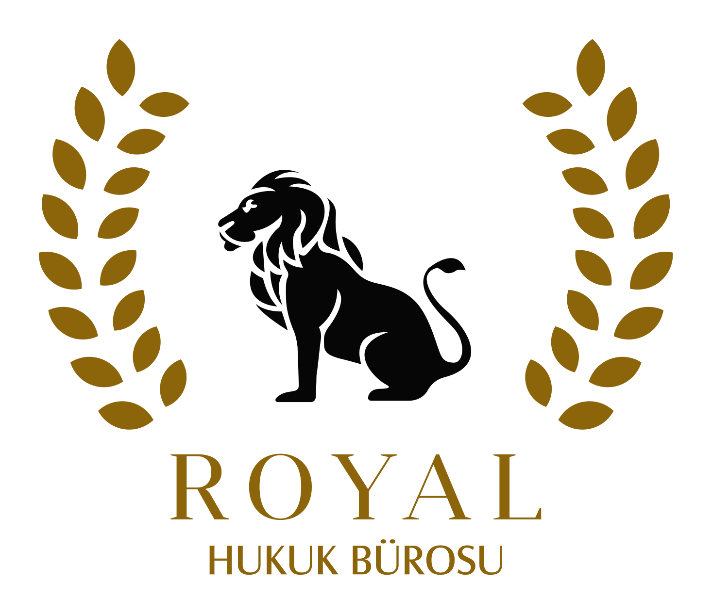

Royal Hukuk Bürosu; ceza, icra, aile, ticaret ve özel hukuk uyuşmazlıklarında farklı sektörlerden müvekkillerinin haklarını, itibarını ve geleceğini korumaya yönelik özenli, kararlı ve sonuç odaklı bir temsil anlayışıyla hizmet sunar.
Güven, gizlilik ve profesyonellik ilkeleriyle güçlü hukuki temsil.
Geniş faaliyet alanlarımız, alanında uzman ve tecrübeli ekibimizle; ihtiyaçlarınıza özel, netlik ve hassasiyetle hazırlanmış stratejik hukuki çözümler sunuyoruz.
Soruşturma ve kovuşturma süreçleri, ifade, tutukluluk, delil değerlendirmesi ve savunma stratejisinin oluşturulması.
Alacak takibi, haciz, itirazın iptali, menfi tespit ve borç ilişkilerinden kaynaklanan uyuşmazlıklarda temsil.
Boşanma, velayet, nafaka, mal rejimi, aile içi uyuşmazlıklar ve koruma tedbirlerinde çözüm odaklı hizmet.
Şirketler, sözleşmeler, ticari alacaklar, ortaklık uyuşmazlıkları ve ticari risk yönetiminde danışmanlık.
Tapu, kira, taşınmaz alım-satımı, ortaklığın giderilmesi ve taşınmaz uyuşmazlıklarında hukuki destek.
Tereke, miras paylaşımı, vasiyetname, mirasçılık belgesi ve miras uyuşmazlıklarında etkin temsil.
Dijital ortamdan doğan uyuşmazlıklar, kişisel veriler, internet içerikleri ve teknoloji temelli hukuki süreçler.
Sigorta tazminatları, poliçe uyuşmazlıkları, trafik ve zarar süreçlerinde hak kayıplarını önlemeye yönelik temsil.
İşçi ve işveren uyuşmazlıkları, kıdem, ihbar, fazla mesai, işe iade ve sözleşme süreçlerinde danışmanlık.
Sporcu, kulüp, menajerlik, disiplin süreçleri ve organizasyonlara yönelik hukuki hizmetler.
Vergi uyuşmazlıkları, idari başvurular, ceza ihbarnameleri, tarhiyat süreçleri ve mükellef haklarının korunmasına yönelik hukuki destek.
Sözleşme hazırlanması, alacak-borç ilişkileri, ifa sorunları, tazminat talepleri ve sözleşmeden doğan uyuşmazlıklarda çözüm odaklı temsil.
İdari işlemlere itiraz, iptal davaları, tam yargı süreçleri, kamu kurumlarıyla yaşanan uyuşmazlıklar ve hak arama yollarında hukuki danışmanlık.
Ayıplı mal ve hizmetler, mesafeli satışlar, abonelik sözleşmeleri, tüketici hakem heyeti başvuruları ve tüketici davalarında etkin hukuki takip.
İkamet ve çalışma izinleri, vatandaşlık başvuruları, sınır dışı kararları, idari itirazlar ve yabancıların Türkiye’deki hukuki süreçlerinde danışmanlık.
Her dosyada titiz değerlendirme, doğru yol haritası ve müvekkilin yanında duran güçlü temsil anlayışı.
Her süreç, yalnızca mevcut sorun üzerinden değil, uzun vadeli sonuçlarıyla birlikte değerlendirilir.
Farklı hukuk disiplinlerinde deneyim sahibi ekip yaklaşımıyla her dosyada kapsamlı değerlendirme yapılır.
Müvekkil bilgileri, dosya içeriği ve strateji mutlak gizlilik anlayışıyla korunur.
Müvekkillerimiz sürecin her aşamasında açık, düzenli ve anlaşılır şekilde bilgilendirilir.
Hak kayıplarının önüne geçmek ve en etkili sonuca ulaşmak için kararlı çalışma yürütülür.
Hem bireysel hem kurumsal müvekkiller için ihtiyaca özel hukuki stratejiler geliştirilir.
Disiplinli çalışma, güçlü analiz ve müvekkil odaklı temsil anlayışı.
Royal Hukuk Bürosu, hukukun farklı alanlarında edindiği mesleki birikimi, güncel gelişmeleri takip eden çalışma disipliniyle birleştirerek müvekkillerine hizmet sunar. Süreçler; dikkatli hazırlık, açık iletişim ve somut ihtiyaçlara uygun hukuki yaklaşım çerçevesinde yürütülür.
Müvekkillerimizin en sık karşılaştığı hukuki süreçlere ilişkin açıklayıcı içerikler.
Banka hesabının üçüncü kişilerce kullanılmasından doğabilecek hukuki ve cezai riskler.
Yazının tamamını okuKira uyuşmazlıkları, tahliye, kira tespiti ve taşınmaz işlemlerinde hukuki değerlendirme.
Yazının tamamını okuİfade öncesi hazırlık, hakların korunması ve savunma stratejisinin önemi.
Yazının tamamını okuAlacak tahsilinde takip yolları, itiraz süreçleri ve dikkat edilmesi gereken noktalar.
Yazının tamamını okuKıdem, ihbar, fazla mesai ve işe iade süreçlerinde temel başlıklar.
Yazının tamamını okuTereke, mirasçılık ve paylaşım süreçlerinde hukuki değerlendirme.
Yazının tamamını okuDijital paylaşımlar, mesajlaşmalar ve çevrimiçi eylemlerden doğan ceza hukuku süreçleri.
Yazının tamamını okuAile hukuku uyuşmazlıklarında süreç yönetimi ve tarafların hakları.
Yazının tamamını okuŞirketler için alacak yönetimi ve sözleşmesel risklerin azaltılması.
Yazının tamamını okuAyıplı ürün ve hizmetlerde tüketici hakları, başvuru yolları ve uyuşmazlık süreçleri.
Yazının tamamını okuYabancıların Türkiye’deki ikamet, çalışma izni ve sınır dışı kararlarına ilişkin hukuki süreçler.
Yazının tamamını okuVergi incelemeleri, cezalı tarhiyatlar, idari başvurular ve mükellef haklarına ilişkin süreçler.
Yazının tamamını okuRandevu ve hukuki danışmanlık talepleriniz için bizimle iletişime geçebilirsiniz.